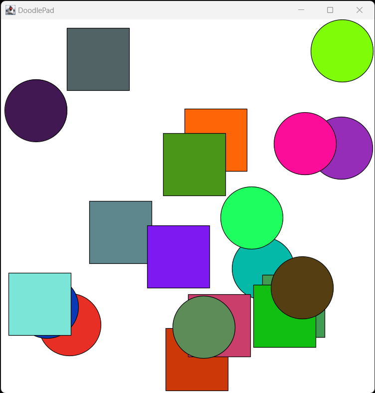

Section 10.1 Core Library Interfaces
Subsection 10.1.1 The Comparable<T> Interface
One of the more important interfaces provided by the Java core library is
Comparable<T>, the source code of which is in Listing 10.1.1. The Comparable<T> interface is widely used in Java. A class must implement the Comparable<T> interface before it may be processed by certain predefined algorithms in the Core Library, including sorting and searching. The compareTo(T o) method returns a negative int if this is ordered to the left of o, a positive int if this is ordered to the right of o, and 0 if this and o can appear in either order. What constitutes less-than, greater-than and equal-to is something that you are free to decide for yourself to suit your own needs.// Comparable.java
package java.lang;
import java.util.*;
public interface Comparable<T> {
public int compareTo(T o);
}
The first thing to note is that the syntax of an interface declaration is the same as an abstract class having only abstract methods, except that the keyword
abstract is removed everywhere and class is replaced with interface. Otherwise, the syntax should look familiar. Like classes, public interfaces must be defined in a file with a name that matches the interface.It is interesting to note that the
Comparable<> interface is generic like ArrayList<T>. When used, the T must be replaced with a type that is substituted into the interface definition before it is compiled. keyword.The interface itself defines exactly one signature to be implemented,
public int compareTo(T o). A class that implements Comparable<T> must define a concrete method implemention that matches that signature.Another huge benefit of interfaces is that a class is not limited to the implementation of only one interface. A class may implement many interfaces. By contrast, in Java a class extends at most one base class. If a base class is not specified, Java extends Object by default. An ability to implement many interfaces is a powerful concept that allows us to create multi-functional and highly flexible classes.
The syntax for implementing an interface is similar to extending a class, only the keyword extends followed by a base class name is replaced with the keyword implements followed by one or more comma-separated interface names. Let’s consider an example.
The Java String class implements Comparable<T>. Strings order themselves lexographically, which is the same ordering of words when listed in a dictionary. First the underlying integer code of each successive character is compared until a difference is found. The String with the lesser character code value is ordered first. Also, shorter Strings are ordered first. We can explore this by invoking the
compareTo(…) method on several String pairs in JShell.jshell> "cat".compareTo("dog"); // Negative result means cat < dog
$1 ==> -1
jshell> "dog".compareTo("cat"); // Positive means dog > cat
$2 ==> 1
jshell> "cat".compareTo("cat"); // Zero means cat == cat
$3 ==> 0
jshell> // Lowercase encoding is greater than uppercase
jshell> "cat".compareTo("Cat"); // cat > Cat
$4 ==> 32
jshell> // Shorter words are less than longer
jshell> "kit".compareTo("kitten"); // kit < kitten
$5 ==> -3
jshell> // But char encoding tested before length
jshell> "kit".compareTo("Kitten"); // kit > Kitten
$6 ==> 32
jshell>
Let’s assume we have written a program that tracks Sentence objects in an ArrayList<Sentence>, and we need to order Sentences based on the number of words that each contains. To simplify a bit, let’s assume each word in a Sentence is separated by a single space. Consider the Sentence class definition in Listing 10.1.2 which implements Comparable<Sentence> and tests the implementation.
// Sentence.java
// Demonstrate Comparable<> interface and sorting
import java.util.ArrayList; // Helpers
import java.util.Collections;
public class Sentence implements Comparable<Sentence> {
private String sent; // Store sentence String
private int wordCount; // Store word count
// Constructor stores sentence string and precomputes word count
public Sentence(String sent) {
this.sent = sent; // Precompute word count
this.wordCount = sent.split(" ").length;
}
// toString override returns sentence String
public String toString() {
return this.sent;
}
// WordCount getter
int getWordCount() {
return this.wordCount;
}
// Implement compareTo method to satisfy Comparable
public int compareTo(Sentence other) {
// Compare wordCounts
if (this.wordCount > other.getWordCount()) {
return 1;
} else if (this.wordCount < other.getWordCount()) {
return -1;
} else {
return 0;
}
}
// Test
public static void main(String[] args) {
ArrayList<Sentence> juliet = new ArrayList<>();
// From Romeo and Juliet, spoken by Juliet. By William Shakespeare.
juliet.add(new Sentence("O Romeo, Romeo, wherefore art thou Romeo?"));
juliet.add(new Sentence("Deny thy father and refuse thy name."));
juliet.add(new Sentence("Or if thou wilt not, be but sworn my love "
+ "And I'll no longer be a Capulet."));
juliet.add(new Sentence("'Tis but thy name that is my enemy: "
+ "Thou art thyself, though not a Montague."));
juliet.add(new Sentence("What's Montague?"));
juliet.add(new Sentence("It is nor hand nor foot "
+ "Nor arm nor face nor any other part "
+ "Belonging to a man."));
juliet.add(new Sentence("O be some other name."));
juliet.add(new Sentence("What's in a name?."));
juliet.add(new Sentence("That which we call a rose "
+ "By any other name would smell as sweet; "
+ "So Romeo would, were he not Romeo call'd, "
+ "Retain that dear perfection which he owes "
+ "Without that title."));
juliet.add(new Sentence("Romeo, doff thy name, "
+ "And for that name, which is no part of thee, "
+ "Take all myself."));
// Sort ArrayList on Sentence word counts
Collections.sort(juliet);
// Print sorted ArrayList
for (Sentence line: juliet) {
System.out.println(line + "(" + line.getWordCount() + ")");
}
}
}
Sentence.java- We import both ArrayList and Collections because we plan to use both.
- Our Sentence class
implements Comparable<Sentence>. - Sentence encapsulates the sentence String itself and word count.
- Word count is precomputed in the constructor.
- A
toString()override returns Sentence String. - The
getWordCount()accessor method returns word count. - The
compareTo(Sentence other)interface method returns an int value that indicates Sentence order based on word count. - The
main(…)method fills anArrayList<Sentence>with Sentence objects from Juliet’s famous speach. - The
Collections.sort(…)static method is invoked to sort theArrayList<Sentence>, which uses our overriddencompareTo(Sentence other). - Sorted Sentences are printed in order, with word count.
javac Sentence.java java Sentence What's Montague?(2) What's in a name?.(4) O be some other name.(5) O Romeo, Romeo, wherefore art thou Romeo?(7) Deny thy father and refuse thy name.(7) 'Tis but thy name that is my enemy: Thou art thyself, though not a Montague.(15) Or if thou wilt not, be but sworn my love And I'll no longer be a Capulet.(17) Romeo, doff thy name, And for that name, which is no part of thee, Take all myself.(17) It is nor hand nor foot Nor arm nor face nor any other part Belonging to a man.(18) That which we call a rose By any other name would smell as sweet; So Romeo would, were he not Romeo call'd, Retain that dear perfection which he owes Without that title.(32)
There is a much shorter and more clever implementation of
compareTo(…) that merely returns the difference between word counts. Convince yourself that the following revision works just as well as the long-winded version in Listing 10.1.2.// Implement compareTo method to satisfy Comparable
public int compareTo(Sentence other) {
return this.wordCount - other.getWordCount();
}
Collections.sort(…) does its job because the only external dependency that the algorithm has is on an implementation of the compareTo(…) method to order two instances of objects stored in an ArrayList. We provide a way to solve that small task, and benefit from highly optimized sorting and searching algorithms that are built-in to the Core Library. This is a powerful opportunity to leverage the work of many others.
Subsection 10.1.2 The Iterable<T> and Iterator<T> Interfaces
Another pair of interesting intefaces in Java’s Core Library are the
Iterator<T> and Iterable<T> interfaces. These interfaces are useful to make it possible to iterate over objects stored in a class that acts as a container. Specifically, fulfilling the Iterator<T> interface provides implementations of methods required to access the elements of a collection one at a time, and the Iterable<T> makes the custom container class compatible with a for-each statement.Following are the the Java Core Library definitions of only the required signatures that must be implemented by both interfaces. Other signatures in each interface have default implementations.
public interface Iterator<T> {
boolean hasNext(); // true if iteration has more elements.
T next() // Returns next element in the iteration.
}
public interface Iterable<T> {
Iterator<T> iterator(); // Returns an iterator over elements of type T.
}
These signatures are straightforward.
Iterator<T> has two signatures, T next() returns the next element and a boolean hasNext() tests if there is another element to be returned. The only required signature in Iterable<T> is Iterator<T> iterator() which generates and return the Iterator<T> object.In the DoodlePad library, the Pad class acts as a container of all Shape objects that are rendered on its window. It also implements the
Iterable<T> interface which means that Shape object that are rendered on a Pad object may be iterated directly.
Listing 5.5.2 is the source code of a program named RandomOvals.java that instantiated, iterated over, and randomly recolored several Oval objects. Ovals were stored in an ArrayList<Oval>. In Listing 7.2.1 we updated that program to RandomOvals2.java which used an array to hold Oval objects. Let’s update that program one more time. This time we will avoid the ArrayList and the array entirely by iterating over Shape objects using the Pad as a container instead. Note that the
Pad.getPad() static method gets a reference to the current Pad object. Also note that we are not limited to Oval objects. Through the magic of subtype polymorphism that we get because all shapes inherit the Shape base class, we can generate any mixture of shape objects and still be able to iterate over all of them with one loop. Lets create a mixture of Oval and Rectangle objects to demonstrate this. Find the douce code of our updated program in Listing 10.1.3 named RandomShapes.java.// RandomShapes.java
import java.util.Random; // Import classes
import doodlepad.*; // Import DoodlePad classes
public class RandomShapes { // public class
public static void main(String[] args) { // Start of execution
// Instantiate randomly placed Oval and Rectangle objects
for (int i = 0; i < 10; i++) { // For-statement
Oval o = new Oval(); // Create an Oval object
o.setMousePressedHandler(RandomShapes::recolor);
Rectangle r = new Rectangle(); // Create a Rectangle object
r.setMousePressedHandler(RandomShapes::recolor);
}
}
// Event handler method that executes when an Oval is clicked
public static void recolor(Shape shp, double x, double y, int button) {
int r, g, b; // Helper variables
Random rnd = new Random(); // Declare Random object
Pad pad = Pad.getPad(); // Get reference to Pad object
// Loop over all Shape objects and reset to a random fill color
for (Shape s: pad) {
r = rnd.nextInt(256); // Random color components
g = rnd.nextInt(256);
b = rnd.nextInt(256);
s.setFillColor(r, g, b); // Change fill color
}
}
}
RandomShapes.javaNotice that we no longer need a collection or array to hold the Shape objects. The Pad object holds them automatically. We create a mixture of Oval and Rectangle objects just to demonstrate that we can iterate over both using a single loop. The
recolor(‚Ķ) method performs the iteration using a single for-each statement which iterates using the Pad object as a iterator, specifically for (Shape s: pad) {‚Ķ. See Figure¬†10.1.4 for the result.
RandomShapes.java